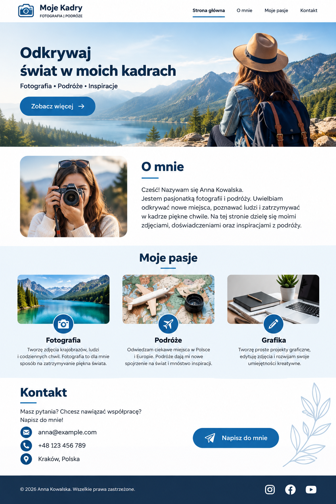
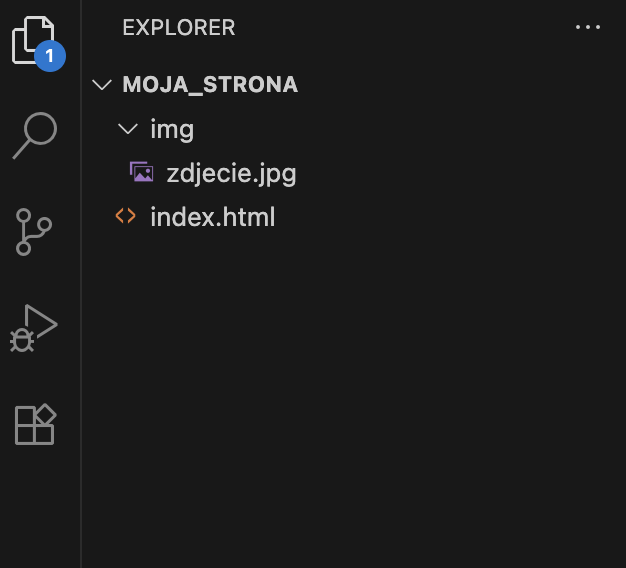
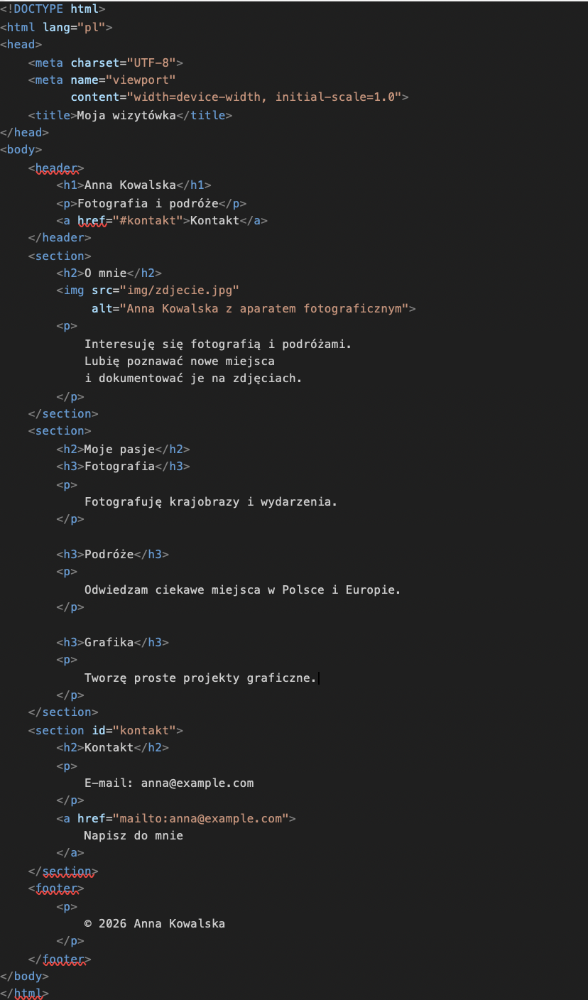
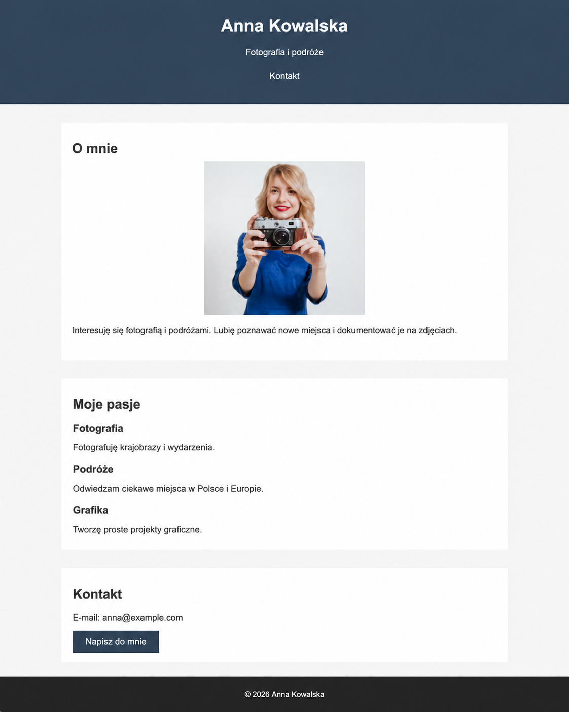

Projekt – Tworzenie strony internetowej
W tym dziale wykonasz jeden większy projekt: własną jednostronicową stronę wizytówkową.
Najpierw zaprojektujesz wygląd strony w Canva. Następnie utworzysz jej strukturę w HTML, przygotujesz wygląd za pomocą CSS, wykorzystasz AI do analizy i poprawy kodu, a na końcu opublikujesz gotową stronę w Internecie za pomocą GitHub Pages.
Efekt końcowy: własna działająca strona internetowa dostępna pod publicznym adresem WWW.
📌 Plan projektu
Canva → HTML → CSS → AI → testowanie → GitHub Pages → samoocena
Projekt strony internetowej w Canva
Zanim rozpoczniesz pisanie kodu, przygotujesz graficzny projekt swojej strony.
Na kolejnych lekcjach spróbujesz odwzorować ten projekt za pomocą HTML i CSS.
1. Wybierz temat strony
Zaprojektuj prostą stronę wizytówkową. Może dotyczyć:
- Ciebie,
- Twojego hobby,
- fotografa,
- grafika,
- małej firmy,
- kawiarni,
- klubu sportowego,
- innego wybranego tematu.
2. Przygotuj treści
Przed rozpoczęciem projektowania przygotuj:
- nazwę strony lub imię i nazwisko,
- główny nagłówek,
- krótkie hasło,
- 2–3 zdania do sekcji „O mnie” lub „O nas”,
- trzy krótkie informacje,
- adres e-mail,
- tekst przycisku, np. „Kontakt”,
- tekst stopki.
3. Utwórz projekt w Canva
Utwórz nowy projekt strony WWW lub projekt w układzie poziomym.
Projekt powinien przedstawiać jeden widok długiej strony internetowej.
4. Zaprojektuj górną część strony
Umieść:
- nazwę strony,
- główny nagłówek,
- krótkie hasło,
- przycisk „Kontakt” lub podobny,
- zdjęcie lub grafikę.
5. Dodaj sekcję „O mnie” lub „O nas”
Umieść:
- nagłówek,
- zdjęcie,
- krótki opis.
6. Dodaj trzy elementy informacyjne
Przykład:
- Fotografia – krótki opis,
- Podróże – krótki opis,
- Grafika – krótki opis.
7. Dodaj sekcję kontaktową
Powinna zawierać:
- adres e-mail,
- opcjonalnie numer telefonu,
- przycisk kontaktowy.
8. Dodaj stopkę
Przykład:
© 2026 Anna Kowalska9. Zadbaj o spójność
Użyj maksymalnie:
- 2–3 kolorów,
- 2 krojów pisma,
- jednego stylu przycisków i grafik.
10. Zapisz projekt
Pobierz projekt z Canva jako:
projekt_wizytowki.png📌 Po lekcji powinieneś mieć
- gotowy projekt strony w Canva,
- ustaloną kolorystykę,
- przygotowane teksty,
- wybrane zdjęcie lub grafikę,
- plik projekt_wizytowki.png.
- gotowy plik projekt_wizytowki.png prześlij na Zadanie w Teams.
Przykład projektu strony

Podstawy pracy z HTML-em
HTML odpowiada przede wszystkim za strukturę i treść strony internetowej.
1. Utwórz folder projektu
wizytowka
│
├── index.html
└── img2. Przygotuj zdjęcie
Do folderu img skopiuj zdjęcie wykorzystane w projekcie Canva.
Nadaj mu prostą nazwę, np.:
zdjecie.jpgUnikaj spacji, polskich znaków oraz dużych liter w nazwach plików.
3. Utwórz dokument HTML
<!DOCTYPE html>
<html lang="pl">
<head>
<meta charset="UTF-8">
<meta name="viewport"
content="width=device-width, initial-scale=1.0">
<title>Moja wizytówka</title>
</head>
<body>
</body>
</html>4. Dodaj nagłówek strony
<header>
<h1>Anna Kowalska</h1>
<p>Fotografia i podróże</p>
<a href="#kontakt">Kontakt</a>
</header>
href="#kontakt" oznacza,
że link prowadzi do elementu posiadającego
identyfikator kontakt.
5. Dodaj sekcję „O mnie”
<section>
<h2>O mnie</h2>
<img src="img/zdjecie.jpg"
alt="Anna Kowalska z aparatem fotograficznym">
<p>
Interesuję się fotografią i podróżami.
Lubię poznawać nowe miejsca
i dokumentować je na zdjęciach.
</p>
</section>6. Dodaj sekcję informacyjną
<section>
<h2>Moje pasje</h2>
<h3>Fotografia</h3>
<p>Fotografuję krajobrazy i wydarzenia.</p>
<h3>Podróże</h3>
<p>Odwiedzam ciekawe miejsca w Polsce i Europie.</p>
<h3>Grafika</h3>
<p>Tworzę proste projekty graficzne.</p>
</section>7. Dodaj kontakt
<section id="kontakt">
<h2>Kontakt</h2>
<p>E-mail: anna@example.com</p>
<a href="mailto:anna@example.com">
Napisz do mnie
</a>
</section>8. Dodaj stopkę
<footer>
<p>© 2026 Anna Kowalska</p>
</footer>9. Sprawdź stronę
Otwórz index.html w przeglądarce.
Sprawdź:
- czy widoczne są wszystkie teksty,
- czy wyświetla się zdjęcie,
- czy przycisk „Kontakt” działa,
- czy link e-mail działa.
📌 Ważne
Na tym etapie strona może wyglądać bardzo prosto. To prawidłowe. HTML odpowiada przede wszystkim za strukturę i treść strony.
Gotowy plik index.html prześlij na Zadanie w Teams.
Przykład struktury projektu

Przykład kodu HTML

Podstawy pracy z CSS-em
CSS odpowiada za wygląd strony internetowej. Spróbujesz teraz nadać stronie wygląd podobny do projektu przygotowanego w Canva.
1. Utwórz plik CSS
Struktura projektu:
wizytowka
│
├── index.html
├── style.css
└── img
└── zdjecie.jpg2. Połącz HTML z CSS
W pliku index.html
wewnątrz <head> dodaj:
<link rel="stylesheet" href="style.css">3. Sformatuj całą stronę
body {
font-family: Arial, sans-serif;
margin: 0;
background-color: #f4f4f4;
color: #333;
}4. Sformatuj nagłówek
header {
text-align: center;
padding: 50px;
background-color: #2c3e50;
color: white;
}5. Sformatuj sekcje
section {
max-width: 900px;
margin: 30px auto;
padding: 20px;
background-color: white;
}6. Sformatuj zdjęcie
img {
display: block;
width: 100%;
max-width: 300px;
margin: 20px auto;
}7. Sformatuj linki jak przyciski
a {
display: inline-block;
padding: 10px 20px;
background-color: #2c3e50;
color: white;
text-decoration: none;
}8. Sformatuj stopkę
footer {
text-align: center;
padding: 20px;
background-color: #222;
color: white;
}9. Sprawdź działanie CSS
Zapisz style.css i odśwież stronę w przeglądarce.
Jeżeli wygląd się nie zmienił, sprawdź:
- czy plik nazywa się dokładnie style.css,
- czy znajduje się obok index.html,
- czy CSS został prawidłowo podłączony w HTML.
10. Dostosuj stronę do swojego projektu
Możesz zmieniać:
- kolory,
- wielkości czcionek,
- szerokość sekcji,
- odstępy,
- wygląd przycisków.
Porównuj efekty z plikiem projekt_wizytowki.png.
Gotowy plik style.css prześlij na Zadanie w Teams.
Przykład projektu strony CSS

Poprawa strony z pomocą AI
W tej części wykorzystasz sztuczną inteligencję jako pomoc podczas poprawiania strony.
1. Przygotuj materiały
Musisz mieć:
- projekt_wizytowki.png,
- index.html,
- style.css,
- folder img.
2. Wykonaj kopię kodu
Przed zmianami utwórz:
index_kopia.html
style_kopia.css3. Przekaż AI trzy elementy
- projekt graficzny,
- plik index.html,
- plik style.css.
4. Użyj polecenia
Popraw mój kod HTML i CSS tak, aby strona była możliwie podobna do dołączonego projektu graficznego.
Zachowaj prosty kod odpowiedni dla ucznia klasy 1 liceum. Nie używaj JavaScript ani dodatkowych bibliotek. Użyj tylko HTML5 i CSS3. Nie usuwaj treści strony.
Zwróć osobno kompletną zawartość pliku index.html oraz style.css.
5. Porównaj zmiany
Nie kopiuj kodu bez sprawdzenia.
Znajdź minimum 3 zmiany zaproponowane przez AI.
Mogą to być np.:
- zmiana kolorów,
- zmiana odstępów,
- zmiana szerokości elementów,
- poprawienie układu strony,
- poprawienie błędnego adresu pliku.
6. Zapisz poprawioną wersję
Zaakceptowane zmiany wprowadź do:
- index.html,
- style.css.
7. Przetestuj stronę
Sprawdź:
- wyświetlanie obrazu,
- działanie CSS,
- wszystkie teksty,
- link „Kontakt”,
- link e-mail.
📌 AI pomaga – Ty decydujesz
Nie chodzi o bezmyślne skopiowanie kodu. Powinieneś wiedzieć, jakie zmiany zaproponowało AI i potrafić wyjaśnić przynajmniej najważniejsze z nich.
7. Gotowe pliki prześlij na Zadanie w Teams
- index.html,
- style.css.
Publikacja strony – GitHub Pages
Gotową stronę opublikujesz w Internecie za pomocą GitHub Pages.
1. Przygotuj finalny folder
wizytowka
│
├── index.html
├── style.css
└── img
└── zdjecie.jpgPlik główny strony musi nazywać się: index.html.
2. Sprawdź połączenie CSS
<link rel="stylesheet" href="style.css">3. Sprawdź ścieżkę do zdjęcia
<img src="img/zdjecie.jpg"
alt="Zdjęcie autora strony">4. Przetestuj stronę lokalnie
Otwórz index.html.
Sprawdź:
- CSS,
- zdjęcie,
- teksty,
- linki.
5. Zaloguj się do GitHub
Wejdź na GitHub i zaloguj się na swoje konto.
6. Utwórz repozytorium
Kliknij:
New repository
Jako nazwę wpisz:
wizytowkaUstaw:
Public
Następnie wybierz:
Create repository
7. Prześlij pliki
Wybierz:
Add file → Upload files
Prześlij:
- index.html,
- style.css,
- folder img.
Repozytorium powinno wyglądać tak:
index.html
style.css
img/
zdjecie.jpg⚠️ Uwaga
index.html powinien znajdować się bezpośrednio w katalogu głównym repozytorium.
Nie powinno być:
wizytowka/
index.html
style.css8. Zatwierdź pliki
Jako opis zmiany możesz wpisać:
Dodanie strony wizytówkowejNastępnie zatwierdź zmiany: Commit changes.
9. Włącz GitHub Pages
Przejdź do:
Settings → Pages
W sekcji:
Build and deployment
ustaw:
- Source: Deploy from a branch,
- Branch: main,
- Folder: / (root).
Kliknij:
Save
10. Otwórz stronę online
Po opublikowaniu strony otrzymasz adres podobny do:
https://nazwa-uzytkownika.github.io/wizytowka/11. Sprawdź gotową stronę
Sprawdź:
- czy strona się otwiera,
- czy działa CSS,
- czy wyświetlają się obrazy,
- czy działa link „Kontakt”,
- czy działa link e-mail,
- czy wygląd przypomina projekt Canva.
12. Jeżeli CSS lub zdjęcie nie działa
Sprawdź przede wszystkim nazwy plików.
Wielkość liter ma znaczenie.
Stosuj nazwy:
- małymi literami,
- bez spacji,
- bez polskich znaków.
Na przykład:
zdjecie.jpg
moje_logo.png
style.css
index.html13. Aktualizacja strony
Jeżeli później poprawisz stronę, nie twórz nowego repozytorium.
Zmień odpowiedni plik w istniejącym repozytorium i zatwierdź zmianę.
Adres strony pozostanie taki sam.
Sprawdź i oddaj projekt
☑ Samoocena
| Kryterium | Tak | Częściowo | Nie |
|---|---|---|---|
| Strona otwiera się lokalnie | |||
| Strona otwiera się z GitHub Pages | |||
| Wygląd przypomina projekt Canva | |||
| HTML ma poprawną strukturę | |||
| CSS znajduje się w osobnym pliku | |||
| Zdjęcie się wyświetla | |||
| Link „Kontakt” działa | |||
| Link e-mail działa | |||
| Tekst jest czytelny | |||
| Kolory są spójne |
Odpowiedz
- Co udało mi się odwzorować z projektu Canva?
- Jakie trzy rzeczy poprawiło AI?
- Które zmiany wprowadzone przez AI rozumiem i potrafię wyjaśnić?
- Co jeszcze zmieniłbym w swojej stronie?
📤 Co oddajesz?
Na zakończenie projektu przygotuj:
- projekt_wizytowki.png,
- index.html,
- style.css,
- wykorzystane obrazy,
- adres URL strony na GitHub Pages,
- wypełnioną samoocenę,
- opis minimum 3 zmian wprowadzonych przy pomocy AI.
Pliki oraz adres strony prześlij na odpowiednie Zadanie w Teams.